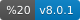
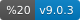

Vite ⚡
Next Generation Frontend Tooling
- 💡 Instant Server Start
- ⚡️ Lightning Fast HMR
- 🛠️ Rich Features
- 📦 Optimized Build
- 🔩 Universal Plugin Interface
- 🔑 Fully Typed APIs
Vite (French word for “quick”, pronounced /viːt/, like “veet”) is a new breed of frontend build tooling that significantly improves the frontend development experience. It consists of two major parts:
-
A dev server that serves your source files over native ES modules, with rich built-in features and astonishingly fast Hot Module Replacement (HMR).
-
A build command that bundles your code with Rollup, pre-configured to output highly optimized static assets for production.
In addition, Vite is highly extensible via its Plugin API and JavaScript API with full typing support.
Packages
| Package | Version (click for changelogs) |
|---|---|
| vite | |
| @vitejs/plugin-legacy |  |
| create-vite |  |
Contribution
See Contributing Guide.
License
MIT.